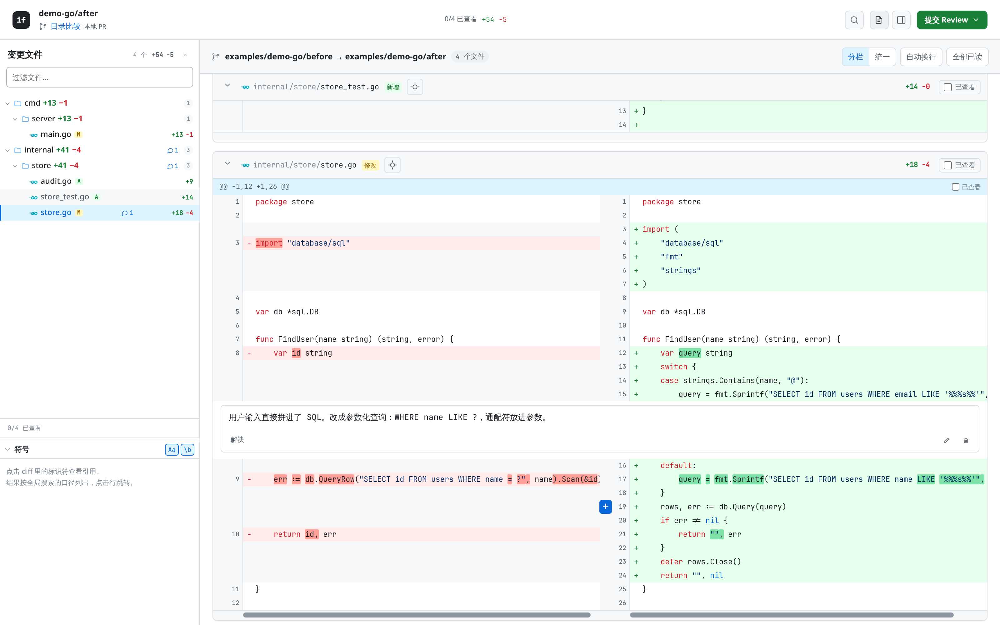

Local diff workbench for coding agents
Read the diff. Write the note. Hand it to the agent.
Open a local repo, comment on the diff, copy one Markdown block into Claude Code, Codex or pi.
- single static binary
- runtime needs only git
- reviews stay in the browser
One keystroke to the agent
Copies the whole review as Markdown in one keystroke, quoted code included.
- Ctrl+Enter
- copies without opening the menu
- quoted code
- every comment carries the lines it quotes
- formats
- the same menu copies or saves Markdown and JSON

Git ranges, not a file picker
Renames stay one card. Viewed marks expire when the content moves.
- range
- any branch, tag, commit or worktree
- detection
- nearest ancestor; never `HEAD~1`
- git diff -M
- renames read as one card, not delete plus add

Local first, in one binary
One executable with the frontend inside. No service, no account, no files on disk.
- ./intentflow
- runtime needs `git` only
- localStorage
- drafts, marks and images stay in the browser
- disk
- the server writes no files

Every reference, without a language server
Click an identifier to see every place it appears in this comparison.
- scope
- changed files, both sides; no index, no LSP
- match
- whole word: `hit` does not match `hits`
- $hit → 1457
- rows for one identifier in one comparison

Also in the workbench
- File tree with comment counts
- Line and multi-line comments
- Search with case and whole-word switches
- Split or unified view, with wrapping
- Virtualised rows for long diffs
- `Ctrl`+`F` search, arrow keys, `Ctrl`+`Enter` copy
Install
Six v0.1.0 archives, one executable each.
Linux / macOS
tar -xzf intentflow_0.1.0_linux_amd64.tar.gz
sudo install -m755 intentflow /usr/local/bin/intentflow
intentflow version
Windows
Expand-Archive intentflow_0.1.0_windows_amd64.zip -DestinationPath .
.\intentflow.exe versionRuntime needs git only.
| Platform | Archive |
|---|---|
| Linux x86-64 | intentflow_0.1.0_linux_amd64.tar.gz |
| Linux ARM64 | intentflow_0.1.0_linux_arm64.tar.gz |
| macOS Intel | intentflow_0.1.0_darwin_amd64.tar.gz |
| macOS Apple Silicon | intentflow_0.1.0_darwin_arm64.tar.gz |
| Windows x86-64 | intentflow_0.1.0_windows_amd64.zip |
| Windows ARM64 | intentflow_0.1.0_windows_arm64.zip |
What ships today
Stage one ships. Stages two to four are the target structure.
| Stage | Content | State |
|---|---|---|
| 01 | Text diff and a local review store | Available |
| 02 | SSA fact layer: project, logic and intent diff | Not started |
| 03 | Behaviour graph: trigger, decision, transform, effect | Not started |
| 04 | LLM narrative layer that only reads facts | Not started |
The AI and SyntaxFlow tabs report that they are inactive.